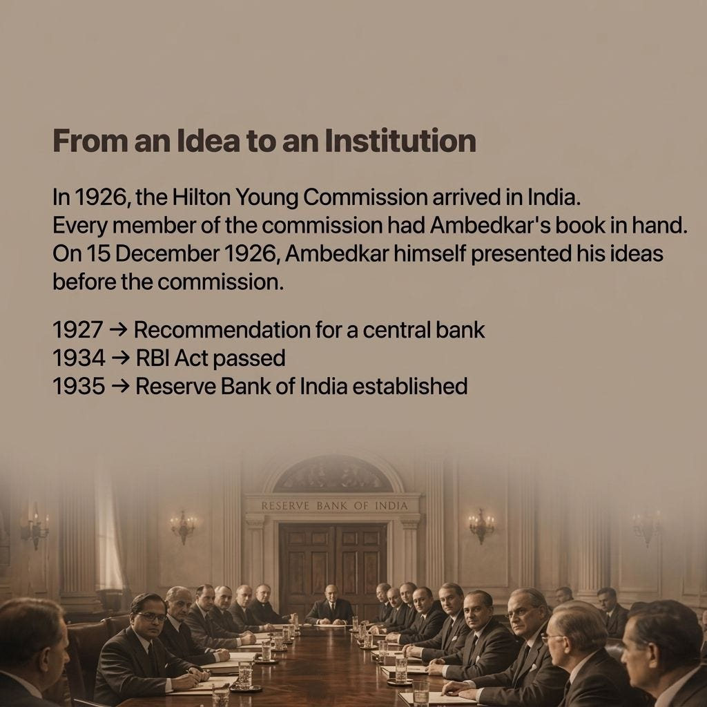
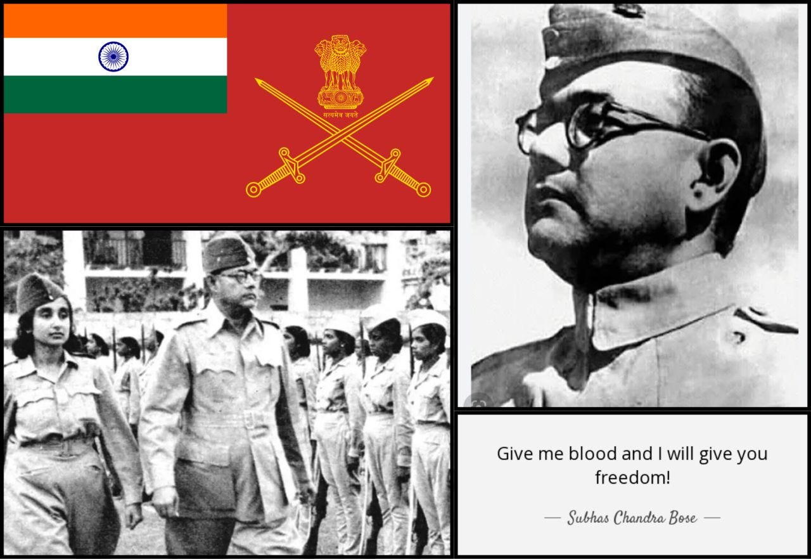
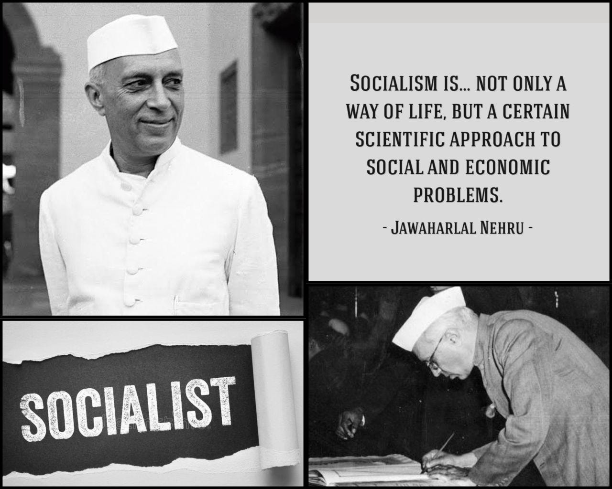

3. Development of Modern India
Problem of the Rupee

We know Ambedkar for reservations. We should know him for the RBI.
Most discussions around Dr. B.R. Ambedkar begin and end with social justice and the Constitution. But his sharpest work was in economics - specifically, monetary policy.
In 1923, Ambedkar wrote The Problem of the Rupee while at the London School of Economics. His argument was simple but radical for its time:
👉 India must control its own currency.
👉 Monetary decisions should not be made in London.
👉 India needed its own central bank.
The Reserve Bank of India (RBI) was formed in 1935. The British never gave him credit. But historical evidence suggests the Hilton Young Commission (1926) was shaped by his work.
Yet today, when we hear "Ambedkar," most minds go to reservation debates - often reduced to jokes or resentment.
The real loss is ours.
We have ignored one of India's finest economic minds. And as a result, we still debate currency sovereignty, still depend on the USD like we once depended on the British Pound, and still haven't built economic systems rooted in our own demography and national interest.
Ambedkar wasn't just a social reformer. He was a political economist who understood that without monetary freedom, there is no real freedom.
IMPORTANT COMMENTARY:-
- Garv - Amartya Sen, the first Asian to win the Nobel Prize in Economics, credited Ambedkar as "the father of his economics".
- Sajal - Amartya Sen is surely his successor in terms of our economic sphere. While Ambedkar laid the foundation, Sen made significant contributions to ascertain more accurate economic conditions using practical and concrete approaches. Today's UN and IMF work upon his principles.
- Saraleepa - The reservation system, I guess was for the first 51 years only... correct me if I am wrong. HIS intellectual depth was hard to understand and harder to be accepted and never got implemented in the true sense.. And HE became a villain for the General category.. Among all his works, how only reservation and quota seemed interesting only... point to be noted My lord ☝️😄
- Sajal - General category hates him because they're mostly unaware of what he has contributed to the state, especially for lower castes and women. Here I've briefly explained the autonomous currency and banking system he proposed. His economic work directly challenged a lot of key principles given by Keynes.. which was quite impressive!
- Sonam - Back in my UPSC prep days, I don’t recall B. R. Ambedkar’s economic work especially The Problem of the Rupee, being discussed in this depth. Posts like this really broaden the perspective beyond the usual narrative. Definitely a dimension more people should know. Good take!
- Sajal - Thank you so much! Dr. Ambedkar's work spans from Social Reformation, Constitutional Law, Religious philosophy and finally to economics. Such visionary! 🌟
- Yash - Wonderful comprehension
- Abhishek - Legendary intellect and foresight. No one from that era comes even close
- Wasim - We know Ambedkar for Constitution of India and Right to Equality first.
Azad Hind Fauj

Your idea of Azad Hind Fauj is a myth.
We grow up saluting Netaji and the INA as an undefeated army of liberation.
But here's the uncomfortable truth the article lays out:
🔻 Only 40% of INA soldiers were even armed.
🔻 No artillery. No transport. No strategic command.
🔻 The Japanese high command made all major decisions.
🔻 INA followed orders. It didn't give them.
And on the other side?
2.5 million Indians in the British Indian Army also had zero control. They took orders from British officers.
So what actually happened?
Both sides took orders from foreign empires.
Both sides bled for someone else's war.
Here's the part no one wants to discuss:
50% of INA soldiers were NOT even Indian-born.
They were second-generation Southeast Asians.
Among the \~1,500 women in the Rani Jhansi Regiment & 70% were diaspora-born.
Caste and communal hatred? Almost absent there.
Why? Because they never lived in India's poison.
So who exactly did Netaji "unite"?
People who already had lived experience of tolerance - thanks to migration and geography.
IMPORTANT COMMENTARY:-
- Rajan - By the end of WWII, Britain was economically and militarily exhausted. The INA trials sparked nationwide outrage, while the Royal Indian Navy mutiny exposed cracks within the armed forces themselves. The real turning point was not battlefield defeat, but the British realization that they could no longer rely on Indian troops to enforce colonial rule—making continued occupation unsustainable.
- Sajal - Largely correct. Though, this post argues regarding the caste based recruitment after the british came up with the martial race theory. Upper castes like Rajputs and Sikhs were termed as brave and fit to fight and others were declared unfit. Netaji's INA had other groups in their military force as I explained earlier which made them able to sustain and compete with the British.
- Rajan - Martial race theory wasn’t invented in a vacuum—it was exploited by the British. They drew from communities like Rajputs, Marathas, and Pathans, all of whom had long military traditions (including service under the Mughals), to build a readily available fighting force. More importantly, they used this framework to pit these groups against each other, deepening divisions in an already fragmented society. That strategy served them well. No army is built by arbitrarily “labeling” people as warriors—there was clear historical precedent that the British leveraged for their own ends. As for your data point: if nearly 50% of the INA consisted of diaspora Indians with no direct stake in colonial India, it actually strengthens the argument—it shows that patriotic sentiment extended beyond geography.
- Arun - Also for me, in my thinking, whatever be the tactical reasoning, at the strategic level and leadership level "an enemies, enemy is a friend" seems fraught with serious problems. Given the widespread racial supremacy theories that underpinned Nazi Germany and Imperial Japan (both of course very different places since WW2), I shudder to think what they would have done to the "lesser people like us" should they have come out on top with WW2.
- Sajal - Agreed! But again, history is written by the victors. British exploited India (and other colonies too) by a massive degree. If Japanese Empire or Nazi Germany ruled us, they would've done the same. 🤕
- Arun - I am suggesting Nazi Germany or Imperial Japan would have been worse by a long shot. It is not propaganda what was done to Jews, Gypsies, etc. It is not propaganda what the Imperial Japanese did in China and many other part of Asia. Their views are written by them and well documented.
- Murali - It's not true that Japan gave commands ..infact when japanese told ina to only give support and not take part in actual fight bose fought back and he convinced that it was their battle
- Arun - ".... history is written by the victors." Probably the case with popular or abridged or pulp history. But if one looks beyond, assuming there is serious interest in the subject, plenty of variations are available. Key is whether those variations are rooted in a primary sources, logic and scientific approach or not.
- Nekmandeep - No way! This is totally different from what is taught in schools😯
- Ravi - but is taught in good colleges where reading reference books and analyzing information from various sources to form independent opinions were encouraged. Unfortunately most people in this forum have not taken history at college level.
- Sajal - They will never explain this in school as school curriculum is much concise and geared towards simplicity. Though Indian academia has gone downhill since the last decade. Because of which it has become much difficult to pursue research with great precision and freedom.. that's why we have to cover this here otherwise mainstream media is run by political and corporate desires. 😁
- Arun - Exactly, my answer to those who keep complaining about history at the school level. Those truly interested plenty available outside and then of course you can do a PhD if so inclined. Why be constrained to the class if it important for you? I know in school history had no appeal to me. I went by the "history geography bade bewafa, raath mein padha, subah dafa". But after reading JLN's "Discovery of India" and "Glimpses of World History" I understood it's value and exploring it from those who are trained and experts in History as a near scientific subject.
- Ravi - Totally agree. JLN's "Glimpses of World History" is the drug that can get most youngsters addicted to history. Recommended reading in grades 9 and 10. So is "Discovery of India" for those who want to understand the idea of India.
- Rajiv - it's lot more that what could be taught in one chapter... And how these points of post make it any less patriotic...
- Rajan - The decisive factor the Indian National Army introduced was not strategic military success, but the psychological threat it posed. Even limited success had the potential to trigger mass mobilisation within India and, more importantly, unrest or mutiny within the British Indian armed forces. This was a deeply worrying prospect for the British Empire, especially given the precedent of 1857. While the INA faced severe constraints in logistics, strategy, and recruitment, the broader context of World War II—particularly the capture of Indian POWs and their induction into the INA—created a situation where loyalty within the colonial military could no longer be taken for granted. Ultimately, the INA’s greatest impact lay in shaking the confidence of the British in their ability to rely on Indian forces, rather than in battlefield outcomes. Please don’t provide skewed information here. Do not mislead people by posting things in conspiratorial style
- Sajal - And who were fighting in INA? That's the main question. How was the recruitment process? Data tells us that 50% of INA soldiers were NOT even Indian-born. They were second-generation Southeast Asians. Among the \~1,500 women in the Rani Jhansi Regiment & 70% were diaspora-born. How were they able to collectively combat? Post 1857, the British enforced Martial race theory which hardened caste based recruitment. Data suggests that the tolerance was mainly because of absense of communal and caste hatred.
- Roeland - looks like the argument of Napoleon on China “It would be the worst thing you have done for a number of years, to go to war with an immense empire like China, and possessing so many resources. You would doubtless, at first, succeed, take what vessels they have, and destroy their trade; but you would teach them their own strength. They would be compelled to adopt measures to defend themselves against you; they would consider, and say, ‘we must try to make ourselves equal to this nation. Why should we suffer a people, so far away, to do as they please to us? We must build ships, we must put guns into them, we must render ourselves equal to them.’ They would,” continued the emperor, “get artificers and ship-builders from France and America, even from London; they would build a fleet, and, in the course of time, defeat you.”[2]
- Habeeb - What is the point that you're trying to make?
- Yash - We must not underestimate the role of awareness and unity among the followers of Bose in freedom struggle instead of making Bose a Godly figure and overglorify the role of armed struggle. There are many people who ask questions like what will happen if Bose lead the independence movement etc. the fact is he couldn't. Only Gandhiji non violence can work for such a big illiterate population indulged in mental slavery.
- Habeeb - That's not what i asked or meant. to believe only one thing could achieve the goals of a freedom struggle is naivete. The colonialists made the choice who they would speak to and transfer power in order to create an example of how to handle the reaction anti-colonialism across their colonies. The colonialists glorified non-violence as it suited their objectives and served their interests while they kept control over arms and armed power as is evident even today. Even today they term all armed resistance against their armed violence as terrorism & use the excuse of showcasing Gandhi as a way to achieve freedom from colonial power. The reality is that no freedome was achieved without a proportion of armed struggle that shook the power base of the colonialists. A reality that the colonial powers underplay, malign in order to create a false notion that ONLY peaceful protests brings forth freedom - history is littered with enough proof that substantiates that this is a blatant lie.
- Yash - Definitely, freedom struggle was a combination of historical events but many people who wants to discredit Gandhi and replace him with BOSE which is Hilarious. I would like to say : "you can discredit anyone but by discrediting Gandhi you loose all the history". I am not saying that Gandhi was good or bad but the magnitude of impact of Gandhi was biggest. Hindutva buddies are trying to create such stupid narratives that's the main concern.
- Habeeb - as I mentioned the freedom struggle was not a linear or a one front battle - Gandhiji had a role definitely, as did Bose to assume either would have succeeded independently without the other is naivete. To do so would be a dishonor to all those who sacrificed for our freedom. The Hindutva ecosystem is desperate to create a division and own freedom icons as they do not have any of their own - to counter them we can't fall into the trap where we diminish the contributions of any freedom fighter right from Tipu to the millions who sacrificed in so many ways for us to achieve a long, hard fought freedom from the tyranny of the colonialists. The best way to counter them is to highlight everyone who fought for independence rather than justify who is more important. Is the school teacher/Doctor of a village in TN or Andhra or Assam or Maharashtra who was arrested and thrown in jail for raising the Indian flag or treating a freedom fighter less important than any of these leaders?
- Yash - IMO , mentioning pros and cons of each are absolutely necessary if we want people to see things clearly because without this clarity left will praise their people blindly and right will praise their people blindly and there can't be any common consensus. WITHOUT common consensus and ZERO conversation, we will be left with extremism only. This is what exactly happened.
- Habeeb - What clarity are you talking about - trying to frame the INA and it's participants as not a reflection of India is not clarity - INA proved the various divisions that we see today are inconsequential and can be overcome if we respect each other as equal humans united in a common goal. Instead of highlighting that core, the narrative is designed to present it as something that "real Indians" but those from diaspora uncorrupted by the "real india" made possible - how different is this from the Hindutva narrative - this is only enabling that narrative not countering it. How facts are presented is extremely important - if the objective is to counter the Hindutva agenda than this post does the opposite.
- Yash - I agree with the presentation part, it's not presented correctly
- Habeeb - The problem with this post is that it takes a linear perspective and doesn’t understand the dynamics involved in a political struggle - don't really understand the purpose of such a post
- Yash - I agree, it's linear perspective and the focus is largely on INEQUALITY. We don't want people to replace Gandhi with BOSE. I hope you heard the recent Yogi's line : Swami Vivekananda ne kaha tha : "tum mujhe khoon do mai tumhe aazaadi dunga". Hindutva people can make people believe these stupid things because everyone else is busy with INVISIBILISATION of INEQUALITY.
- Rakesh - Very interesting. There will be so many stories & rumours about this Great Man. (as there are stories / rumours about any great person) But it is also said that if there was 1 Indian that the British feared - it was Subhas Chand Bose. Not Gandhi ji It is also said that HE was one of the main reasons they left India - not Gandhi Ji.
- Yash - Gandhi was responsible for Indian freedom struggle majorly and after 1928, it's Gandhi Nehru Poorna Swaraj, Bose contribution was mostly psychological and political in 1940s to erode the credibility of British from common public which Gandhiji was doing since DECADES. There can't be any India as a country without Gandhi, India wasn't a country but it was a sub-continent.
- Yash - Great #cfbr population data can tell things which is often ignored in the mainstream.
- Raja - The difference is that Netaji loved our motherland. And he was willing to die for it. Just like Veer Saheed Bhagat Singhji, we may not agree with their means, but we respect and adore their determination and their sacrifice. It was Netaji who called Gandhiji the Father of our Nation. It was he who said Pundit Nehru is the right person to lead our nation. So lots of respects for that.
- Koustav - This post mixes selective truths with exaggerations and unsupported claims. The Indian National Army did face real constraints—limited logistics, supply shortages, and dependence on Japan during campaigns like Imphal (Peter Fay; Bayly & Harper)—but claims like “only 40% were armed” or “no command” lack credible sources; the INA had structured ranks and leadership under Subhas Chandra Bose, even if major strategy was coordinated with Japan. Equating it with the British Indian Army as “both fighting for foreign powers” is false—the INA’s goal was Indian independence. Saying “50% were not Indian” is also misleading, as many recruits came from diaspora communities or POWs but were ethnically and politically Indian. The INA was not undefeated—it was defeated in 1944–45—but its real impact came later: the Red Fort trials (1945–46) triggered mass support and unrest within the British Indian forces, which historians like Srinath Raghavan link to accelerating British withdrawal. Reducing this history to viral claims isn’t “uncomfortable truth,” it’s poor historiography.
- Yash - INA goal was India independence but were Japanese committed for Indian freedom? No. That's why Japanese didn't give weaponary and autonomy to Bose
- Anirwan - what did you expect? Charity. Life is not easy. Netaji did his best with the limited resources available. It was not Japanese but the Indian Masses that he expected would join in the War... Didn't happen in that short time. If he had crossed Assam and reached Bengal. Lakhs of Warriors would have joined his forces. Leaders show the direction. The ground level works has to be done by the followers.
- Sonam - Yes, constraints were real but the Azad Hind Fauj still broke a bigger barrier, loyalty to empire. That change,really amplified by Subhas Chandra Bose, mattered more than battlefield outcomes.
- Dogra - Geopolitical factors were not in control of those fighting, but they were fighting for freedom of their homeland, despite difficulties.. while there is not much of data for INA as it was destroyed , but how does being unarmed makes it unpatriotic.. Or having less resources does not make objective any less.. Or being second or third generation matters.... Not sure what happened to people. Showering likes in here...
- Yash - many people wants to replace Gandhi with Bose (especially RSS people, I hope you remember the useless debate of "Why Nehru become first PM not the Patel" , how exactly that debate becomes the mainstream ? ) .. these all things happened due to INVISIBILISATION OF INEQUALITY. This appears harmless but it's so harmful that people can't believe. If you remember first they demonise Nehru and mobilised the public and everyone let that happen so the safest way is to write the fact so that nobody will replace Gandhi with Bose. The story is very clear that Bose respected Gandhi .. similar was true for Patel .. but see what happened .. we we don't measure things then we're prone to RSS narrative.
- Anirwan - This is known to all who have studied History beyond school level. Azad Hind Fauz was more symbolic than a real threat. And what did you expect? But, that doesn't belittle the valiant effort of Netaji Subhas Chandra Bose and his brave soldiers, who knew that they will die. But, fought till their last blood drop. But, the political reach of Azad Hind Fauz was tremendous. It triggered the Navy Mutiny in Bombay. Netaji didn't expect that his 60,000 odd forces would liberate India but that once his soldiers entered the India Mainland, they would be joined by millions of youth. That would terrify the British to leave India. It is taught in school as we have no stories of sacrifice of this scale to tell towards Indian Independence Movement.
Fabian Socialism

Everyone loves to attack Nehru today. Right-wing calls him a socialist fool. Left-wing says he sold out to capitalism.
Both are wrong.
Here's what Nehru actually believed - and why it makes everyone uncomfortable:
He rejected pure capitalism → because it creates crony monopolies and deepens caste-based inequality.
He rejected pure communism → because it kills efficiency, innovation, and turns humans into machines.
He chose Fabian Socialism - nationalise key industries, prioritise rationality over politics, build public healthcare and education.
Now here's the important part:
Nehru supported reservations. But he also warned against them.
He said reservations are necessary to give backward communities a fair start. But if they become a permanent crutch on caste lines, the "creamy layer" will capture everything - and society will never get rid of caste.
His solution?
👉 Education.
👉 Economic opportunity.
👉 Decentralisation.
👉 Not just job quotas forever.
He also said something that would get him cancelled today:
"Caste groupings are even more dangerous than political groupings. Democracy cannot thrive in a society marked by casteism and communalism."
So let me ask you:
If Nehru was so wrong, why is every single problem he predicted - crony capitalism, creamy layer capture, regional inequality, caste violence - now worse than ever?
IMPORTANT COMMENTARY:-
- Yash - Great #cfbr Nehru was the greatest PM India ever had. Reservation without Socialism is a joke on social justice.
- Franklin - Dwijas benifited most during his regime & Dwijas most hated person is Nehru.
- Sajal - Indeed .. by deleting and tarnishing Nehru's image .. they purposely undermined inclusion + collective growth
- Yash - just the crab mentality of Dwijas, they want to enslave the lower castes even if it leads to their own slavery. 1000 years of slavery of Dwijas isn’t random, it’s a byproduct of caste hatred.
- Swayam - he was not wrong and people judge him wrongly due to a few mistakes or steps which he took which might have been practical at that time but now as we look through the past they hurt us later
- Sajal - What sort of mistakes to be specific?
- Swayam - some say his policies towards China and decisions taken in the indo-china war in 1962 are questionable
- Sajal - These are mostly false narratives in the mainstream. Nehru's Non-aligned foreign policy built our infrastructure with the help of both blocs .. without technology .. military is useless .. his strong diplomacy on borders caused the chinese to escalate the issue .. + he was already sceptical of communist party .. this is well documented in historical sources .. see citation 55 - https://en.wikipedia.org/wiki/Sino-Indian_War#cite_note-GP-60
- Swayam - Fair point. But here is what I keep thinking about. Even if the vision was right, were the systems built strong enough to carry it forward? The problems we see today, power concentration, inefficiencies, policy failures, don't just appear out of nowhere. They usually start from how the foundation was laid. So the real question is, was the gap in the vision itself or in how that vision was turned into institutions?
- Jatin - Because when you choose the middle path of reason and rationality without being pressured by any vested interests, then you p*ss off ALL the vested interests.
- Yash - why only rich people have vested interest not the rational common middle class people. Why common people constantly run away from their responsibility and let the radicals of both sides hijack the narrative and resources.
- Sonam - He was trying to manage contradictions, not eliminate them. What’s unsettling is we’re still struggling with the same ones.
- Sajal - We're struggling because we deviated from our socialist principles. Fabian socialism advocates for nationalising key industries .. and we privatised those .. rationality over politics is crushed due to vote banks ... After 1990s reforms .. nothing seems to be moving towards a better way
- Arethiya - This post proves its own weakness. You list every problem Nehru "predicted"; crony capitalism, creamy layer capture, regional inequality, but he had *seventeen years to fix them and didn't. The License Raj he built is the single biggest reason crony capitalism took root. The Planning Commission he created concentrated power in Delhi, directly causing regional inequality. The reservation argument is slippery. He warned against caste-based permanence while doing nothing institutionally to build the education alternative he claimed was the answer. That's anything but nuance, it's having it both ways. He wasn't villainous. He was a visionary who mistook his own clarity for institutional design. The problems you're describing aren't despite Nehru, they're substantially *because of the specific choices he made.
- Sajal - This is a genuinely good critique .. But You're judging Nehru against an ideal India that never existed. Without the Planning Commission, who would have built the dams, steel plants, IITs, AIIMS, and the public sector infrastructure that gave us any industrial base? The private sector in 1950 was tiny, feudal, and concentrated in a few communities. Without the License Raj, would we have gotten faster growth? Possibly. But would that growth have been inclusive? Look at India after 1991 .. growth accelerated .. but inequality exploded. After 1991 .. when License Raj ended, Planning Commission weakened, markets freed .. crony capitalism got worse. Inequality exploded. Education didn't magically fix itself.
- Arethiya - Fair, public investment in 1950 made sense. I'm not arguing against AIIMS, IITs or the dams. My issue is the *mechanism*. Building steel plants fills a market gap. Deciding who gets to manufacture, import, and compete is a different thing entirely, that's not development but discretion. And discretionary power always gets captured don't they Your 1991 point actually concedes my argument. If forty years of controlled economy produced capitalists entrenched enough to *capture liberalisation itself*, the controlled economy created the problem. You can't build a protected elite and then blame the exit. On inequality, hundreds of millions were lifted from poverty post-1991. India in 1989 was on the verge of sovereign default. That's the actual verdict on forty years of Nehruvian economics. He built real things. He also built fragile things. Both are true. The post only wants one of them to be. The inequality that exploded was relative. A tide that lifts unequally is still lifting. The distinction I'm drawing is simple: public investment ≠ centralised discretion. Nehru bundled them together as if they were inseparable. They weren't. That bundling is the legacy worth interrogating, not the dams.
- Yash - India would have been balkanized without Inclusive Growth. That's why politics and Economics always GO hand in hand. Anyone who claim to understand ECONOMY without POLITICS and POLITICS without ECONOMY is a FOOL or FOOLING other people.
- Iha - We really need to dive deep into his thought process!
- Sajal - Yeah obviously .. because Nehru was the only leader who was actually aware of India's demography and what solutions should be implemented .. he rightly built institutions .. and focused on industrial and agricultural growth .. we abandoned everything later on and leaped onto service sector which made us no more than slaves
- Arindam - Nehru's failure can be attributed, mainly to the fact, that his style was not consensual. He assumed a divine right to rule and as a result, never consulted his colleagues on serious matters of state.
- Sajal - Nehru operated within a Cabinet system .. Patel, Prasad, Ambedkar, and others disagreed with him openly .. Hindu Code Bill? Diluted because of opposition. Kashmir's accession? Patel disagreed. So "divine right to rule" sounds exaggerated .. but where's the evidence? Name one major policy he imposed without consultation and I'll wait.
- Arindam - Look at his foreign policy, for example. He overrode everyone. Read up more
- Sajal - Nehru was himself minister of foreign affairs .. so ultimately decisions were on his shoulders .. and everything was discussed through cabinet .. this is well documented .. see his letters to Prasad, Menon, Radhakrishnan and to chief ministers
- Arindam - Read the book written by the first Foreign Secretary. His surname was Gupta (probably). He was also compromised due to his liasions with Edwina Mountbatten
- Yash - India’s first Foreign Secretary was K. P. S. Menon, not someone named Gupta. It's been 12 years of MODI's Hindu rashtra 😁 why it's not published in any credible journal ??
- Pankaj - there cannot be a more uniformed assessment than this. It is like the untruth (spread by RSS cohorts) about Nehru not allowing his cabinet colleagues to attend the funeral of Sardar Patel. The fact is that Nehru alongwith his colleagues attended the procession
- Swayam - basically we are all fed wrong info and false naratives are fixed in our minds everyone says we will work for actual growth for our country but we are actually adopting western culture when the world is actually recognising and moving towards indian lifestyle and practices and no wants to solve actual problem everyone is focused on their own gains and how be in power
- Dipesh - Please delve deeper into the pre-indepence era for a fairer insight on the issue . You made it sound like it was his well thought and a conscious decision, I rather think much of it as fate accompli . The geo-political situation at that time was totally different. The world was splitting into two axis of capitalism and communism. China was on a road of upheavel. He feared similar scenario for India with poverty and class differentiation very prevalent. Siding capitalism would entail more divisive gap and successive impact of revolution on India too. On choosing side with socialism that meant power would go to communist from him. I do not deny his challenges as first PM , he took the baton at the fag end in the race but I do not see him as a statesman or visionary. He was justvas any political leader clueless and basking in the glory and reaping on the lineage of his political party. From where he started offcourse with challanges , every thing was a new introduction to the country vis-a-vis the western countries. If you can see , we are an decade behind in technological advancements to our western counterparts.
- Yash - you are seeing things from Indian History perspective not from the first person view as Nehru. Marxist movement already happened in 1880's in British as they got industrialised first and then Fabian society is made by Sydney Web, Beatrice Web and Bernard Shaw (Nobel) etc and many intellectuals as a response to Marxism and formed London School of economics in 1895. Nehru was exposed to that part of Fabian society and understood the problem of industrialisation first hand. Many people from Lee Kuan Yew, Bose, Dr Ambedkar, Nehru, Jinnah, Clement Atlee .. I can give a list of more and more people who were aware of Fabian Society .. but the point is simple. They were exposed to the question first so they actually understood the problems so they found the right solutions or implement the right solutions. That's why understanding of the Historiography is very important.
- Sajal - A clueless leader doesn't build IITs, AIIMS, ISRO, dams, steel plants, and a functioning democratic constitution from scratch ..We had to face poverty, diversity, partition trauma together with wars and famines .. We were not decade but nearly a century behind in industrial output, literacy, and infrastructure .. In just 17 years we advanced in nuclear energy, space research, technical education, etc .. thanks to fabian socialism .. The real technological lag accelerated after Nehru .. because neither Indira nor Rajiv invested seriously in R&D or tech manufacturing at scale .. Name one leader in the developing world in the 1950s who inherited poorer, more fractured country and did better than Nehru within seventeen years.
- Amit - Interesting perspective, but it feels a bit one-sided. If Nehru himself warned about “creamy layer capture” and long-term dependency, then the real question isn’t whether he supported reservations — it’s why the system failed to stay balanced. Every policy has at least three dimensions: 1) Immediate correction 2) Efficiency & merit 3) Long-term sustainability We’ve been stuck debating only the first two. Maybe the real issue is not what was intended, but how it evolved into a permanent political tool. Would love to hear your take on where exactly the balance broke.
- Yash - for long term sustainability we need caste census and we haven't done it since 1931.
- Amit - Agreed on data. But if data can be influenced even today with AI, it must have been even more vulnerable earlier. So the question is — how do we ensure accountability, not just collection?
- Yash - you can't understand reservation without understanding the caste system so we'll cover that in future posts. Reservation can't work without Socialism.
- Amit - Fair point. But experience tends to reshape how we interpret systems. What appears logical on paper often behaves very differently over time in practice. That difference in perspective is important to acknowledge. Data without uniformity doesn’t solve imbalance — it can institutionalize it. Thoughts? I get the argument for a caste census. But here’s the uncomfortable question: In a system where policy frameworks already vary across different sections, why are we doubling down on just one dimension? Are we trying to fix inequality — or just measuring it selectively? If the goal is long-term sustainability, shouldn’t the framework be consistent across all pillars of society? Curious to hear how you’d define a truly uniform approach.
- Yash - CASTE INEQUALITY is the highest form of INEQUALITY if you take aggregate. That's why I said you can't make sense out of reservation without understanding caste system. CASTE is not merely psychological but also economics.
- Amit - Selective structuring can create new imbalance while solving old ones.
- Yash - please read the post again what Nehru wrote .. it's the answer of your question ..
- Amit - please research what Nehru just said and what's done.
- Robert - very well articulated Non-biological perspective.
- Shankar - But ultimately socialism crumbled. India had to bailed off by IMF and World Bank and open it's economy. Socialist Russia collapsed too. Nehru even though might have been well intentioned, started us off on a wrong path which explains why we are poor till today.
- Sajal - Which socialism? Russia never had Fabian socialism. It had state terror disguised as communism. Nehru explicitly rejected that model. So comparing Nehru's India to Stalin's Russia is BS ... Secondly .. IMF bailout came out in 1991 happened ... decades after Nehru died .. The collapse came from Indira Gandhi's over-nationalisation (which Nehru warned against) ... In 1947, India's literacy was too low Life expectancy below 30 years. We were a feudal and fragmented subcontinent. By 1964, despite wars and droughts, India had built IITs, AIIMS, ISRO, dams, steel plants, and a functioning democracy. Today, India is the 5th largest economy. Read the post again .. it's our drift toward crony capitalism since the 1990s, where wealth concentrated in fewer hands, manufacturing didn't grow .. and social system lagged.
- Naresh - I am surprised that he has not been blamed for the failure of the Women's Bill in parliament. He is directly responsible for it ;)
- Yash - CA, CPA, CMA RSS can do anything, for a decade, they fool Indians with the conversation : "Patel vs Nehru". You can very much sense the IQ of general public.
- Saurabh - Be it left wing or right wing ,,, people must admit he was way ahead of his time... he had thought all possible pitfalls and repercussions of the EITHER model ... be that USSR or USA. If instead of debating what failed and what survivd, people started thinking rationally and not get sweft by CRONYISM , GREED and CORRUPTION, the fate of the country would have been way different ... We have a Bad habit .... To exploit only the Bad Workarounds of a model, not follow the brighter side of them ..